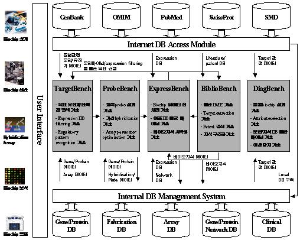
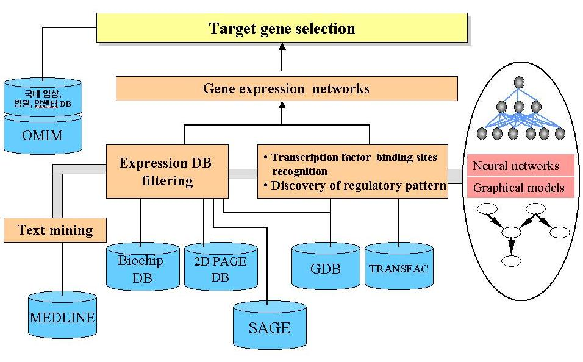
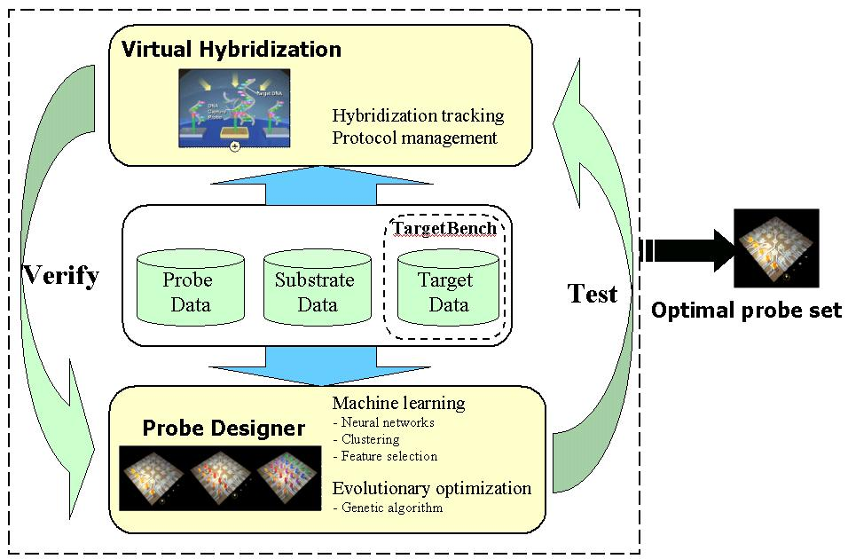
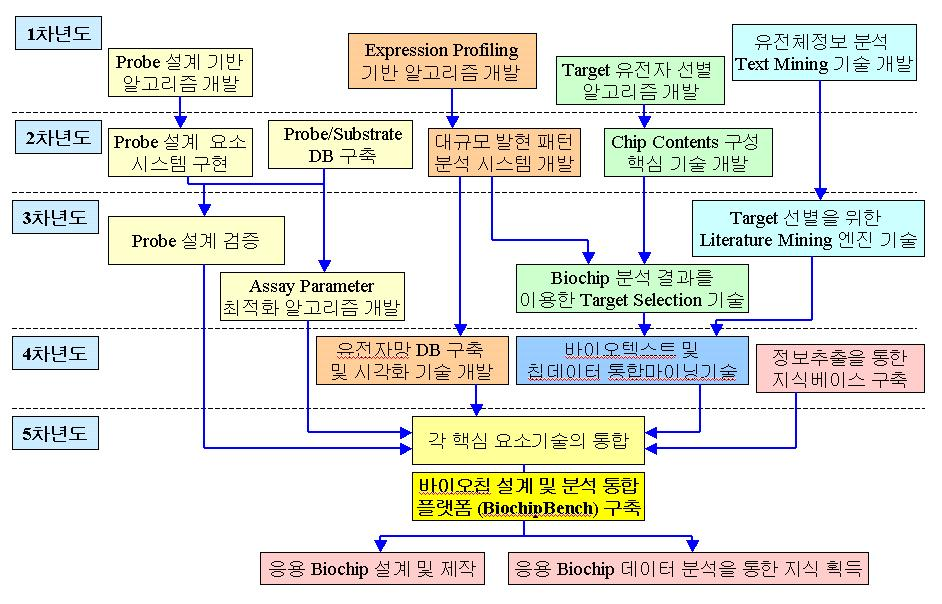

|
|
과 제 명: |
DNA칩 지능 설계 및 분석 기술 (Intelligent Design and Analysis Techonology for DNA Chips) |
연구실명: |
바이오지능 연구실 (Biointelligence Lab) |
▒ 개 요 ▒
최종 연구목표: DNA칩의 설계·제작·분석·응용에 관련되는 전체 파이프라인을 지원하는 "지능형 Bioinformatics 기술" 및 "통합 플랫폼(DNAChipBench)" 개발
DNAChipBench 시스템은 TargetBench, ProbeBench, ExpressBench, BiblioBench 및 DiagBench의 5개의 소프트웨어로 이루어지며 그 구조는 아래 그림과 같다.

DNAChipBench 시스템의 각 구성요소의 기능을 요약하면 다음과 같다.
1) TargetBench
특정 응용에 필요한 DNA칩 contents 제작 즉 target 유전자 선별을 지원하는 모듈이다. 임상 DB 및 OMIM과 같은 public DB에서 target을 선정하는 기술과 expression DB filtering 기술로 구성된다. 최종적으로는 BiblioBench 및 ExpressBench에서 추출된 바이오 지식과의 결합을 통한 DNA칩 제작 목적에 가장 적합한 유전자 contents를 선택하는 알고리즘과 도구 소프트웨어를 개발한다. 유전자 선별을 위해서는 유전자 조절 패턴 분석 및 transcription factor binding site의 예측이 필요하며 이에 신경망이나 naive Bayes 분류기, 또는 hidden Markov model 등과 같은 기계학습법을 사용한다.

2) ProbeBench
최적의 hybridization 실험을 위한 probe 설계를 지원하는 소프트웨어이다. Virtual hybridization 도구 개발을 통한 최적의 cDNA/oligonucleotide probe 설계와 assay parameter optimization, 그리고 fabrication parameter의 optimization 기술로 구성된다. 실험 조건의 최적 조건을 예측하기 위해서는 신경망이나 확률기반 기계학습 기법이 연구될 것이며, 최적화를 위해서는 유전자 알고리즘이 사용될 예정이다.

3) ExpressBench
DNA칩 데이터의 발현 패턴을 분석하는 소프트웨어로 데이터 전처리, expression profiling, genotyping 및 이종 DB와의 통합마이닝 기술로 이루어진다. DNA칩 데이터의 특성을 고려한 기계학습 기술로 클러스터링 기술, Bayesian network에 의한 dependency analysis, 발현 패턴의 차이를 분석하기 위한 latent variable model, generative topographic mapping 기술 및 시각화 기술 등이 연구된다.

4) BiblioBench
MEDLINE의 PubMed와 같은 논문 DB, 특허 DB와 같은 public literature DB로부터 바이오 지식을 추출하는 소프트웨어이다. 여러 종류의 문헌 DB에서 관련 문헌을 검색하고 필터링하는 information retrieval 기술, 필요한 지식만을 문헌으로부터 추출하는 information extraction 기술, 자연언어처리 기술로 이루어지며 추출된 지식을 구조화하는 기술이 포함된다. 관련된 기계학습 기술로 hidden Markov model, latent variable model 등을 개발하며 이의 효과적인 구현 기술에 대하여 연구한다.

▒ 단계별 연구 목표 ▒
|
단계 |
연구개발목표 |
|
1단계(2002. 6. 25 ~ 2004. 6. 24) |
DNA칩 Informatics 핵심 엔진 개발 |
|
2단계(2004. 6. 25 ~ 2007. 6. 24) |
DNA칩 설계 및 분석 통합 플랫폼 구축 |
▒ 연차별 연구 목표 및 내용 ▒
|
연도 |
연구개발 목표 |
연구개발 내용 및 범위 |
|
1차년도 (2002) |
DNA칩 설계 및 분석 요소 알고리즘 개발 |
- Target 유전자 선별 알고리즘 개발 - Probe 설계 핵심 알고리즘 개발 - 유전자 발현 패턴 Profiling 알고리즘 개발 - 유전정보 분석 Text Mining 기술 개발 - HPV 변이 판별용 Oligo Chip 제작 DB 구축 |
|
2차년도 (2003) |
DNA칩 설계 및 분석 핵심 엔진 구축 |
- Target 선별 (TargetBench) 핵심 기술 개발 - Probe 설계 (ProbeBench) 요소 시스템 구현 - 발현 패턴 분석 (ExpressBench) 시스템 개발 - 문헌 정보 분석 (BiblioBench) 요소 기술 개발 - HPV 변이 판별용 Oligo Chip 개발 및 알고리즘 평가 |
|
3차년도 (2004) |
DNA칩 통합 설계 기술 개발 (TargetBench 및 ProbeBench 개발) |
- Target 선별을 위한 Literature Mining 엔진 개발 - DNA칩 분석결과를 이용한 Target Selection 기술 개발 - Virtual Hybridization 도구를 통한 Probe 설계 검증 - Assay Parameter 최적화 알고리즘 개발 |
|
4차년도 (2005) |
DNA칩 지능형 분석 기술 개발(ExpressBench 및 BiblioBench 개발) |
- 바이오텍스트 및 칩데이터 통합마이닝기술 개발 - ~ 30,000 노드 유전자망 DB 구축 및 시각화 기술 개발 - 바이오지식베이스의 구조화 및 시각화 기술 개발 - 정보추출을 통한 바이오지식베이스 구축 |
|
5차년도 (2006) |
DNA칩 Informatics 연구개발 지원 시스템 구축 (DiagBench 개발 및 통합) |
- 시스템 통합을 통한 DNAChipBench 개발 - 응용 Biochip 설계 및 제작 - 응용 Biochip 데이터 분석을 통한 지식 획득 - 획득된 바이오지식의 통합화 및 검증 |
▒ 연구 추진 체계 ▒

|
▒ Publications ▒ |
|
Project title |
Intelligent Design and Analysis Technology for DNA Chips |
|
Sponsor |
Korean Ministry of Science and Technology |
|
Principal investigator |
|
|
Researchers |
1) TargetBench Team
2) ProbeBench Team
3) ExpressBench Team
4) BiblioBench Team |
|
Duration |
Jun. 2002 - Jun. 2007 |
| Contact | Kyu-Baek Hwang |
| kbhwang@bi.snu.ac.kr | |
| Phone | +82-2-880-1847 |
| Fax | +82-2-875-2240 |